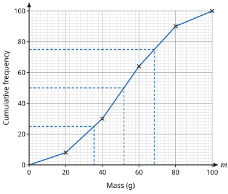
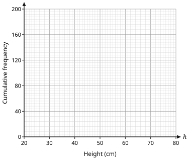
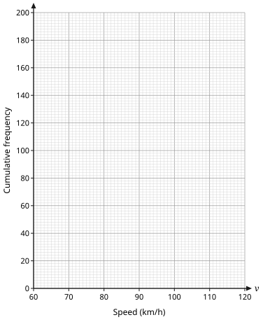

<script>if(location.hostname.endsWith('onrender.com'))location.replace('https://math-sandbox.github.io'+location.pathname+location.search+location.hash)</script>
<section class="theory" data-section="IGCSE-20.2">
<h2>20.2 Cumulative frequency</h2>
<p class="src">Based on Cambridge IGCSE Mathematics Core and Extended Coursebook (Karen Morrison and Nick Hamshaw), Chapter 20. The wording is original and follows the published section titles and the standard Cambridge IGCSE treatment of the topic. Printed pp.680–694.</p>
<p class="key-words"><strong>Key words:</strong> <em>cumulative frequency</em>, <em>cumulative frequency diagram</em>, <em>cumulative frequency curve</em></p>
<h3>Running totals</h3>
<p>The cumulative frequency at a value is the number of data values less than or equal to it. For grouped data, add the frequencies class by class: the cumulative frequency at the upper boundary of a class is the total of that class and all the classes before it.</p>
<h3>Drawing a cumulative frequency diagram</h3>
<ul>
<li>Plot each cumulative frequency against the upper boundary of its class, not the mid-value.</li>
<li>Start at the lower boundary of the first class with a cumulative frequency of 0.</li>
<li>Join the points with a smooth cumulative frequency curve, or with straight lines to make a polygon. The graph never goes down.</li>
</ul>
<h3>Estimates from the diagram</h3>
<p>For a total frequency \(n\), read across from these cumulative frequencies and then down to the horizontal axis:</p>
<ul>
<li>the median at \(\dfrac{1}{2}n\);</li>
<li>the lower quartile at \(\dfrac{1}{4}n\) and the upper quartile at \(\dfrac{3}{4}n\); the interquartile range is the upper quartile minus the lower quartile;</li>
<li>the \(p\)th percentile at \(\dfrac{p}{100}n\).</li>
</ul>
<p>To find how many values are greater than a given value, read the cumulative frequency at that value and subtract it from the total.</p>
<div class="ms-widget" data-widget="cumulative-frequency-curve"></div>
<script src="../../assets/widget-kinds-pkg15.js"></script>
<div class="worked-example">
<h4>Worked example 1: Median and quartiles</h4>
<p class="src">Coursebook, 20.2, reading a cumulative frequency diagram. New numbers.</p>
<p>The masses of 100 apples are shown in the table. Draw a cumulative frequency diagram and use it to estimate the median and the interquartile range.</p><table><thead><tr><th style="white-space:normal">Mass (\(m\) g)</th><th style="white-space:normal">Frequency</th></tr></thead><tbody><tr><td>\(0&lt;m\le20\)</td><td>8</td></tr><tr><td>\(20&lt;m\le40\)</td><td>22</td></tr><tr><td>\(40&lt;m\le60\)</td><td>34</td></tr><tr><td>\(60&lt;m\le80\)</td><td>26</td></tr><tr><td>\(80&lt;m\le100\)</td><td>10</td></tr></tbody></table>
<ol class="steps">
<li>Running totals of the frequencies give the cumulative frequencies 8, 30, 64, 90 and 100 at the upper boundaries 20, 40, 60, 80 and 100. <span class="mark">M1</span></li>
<li>Plot \((0, 0)\), \((20, 8)\), \((40, 30)\), \((60, 64)\), \((80, 90)\) and \((100, 100)\), and join the points. <span class="mark">B1</span></li>
<li>Median: read at 50, about 52 g. <span class="mark">B1</span></li>
<li>Lower quartile at 25, about 35 g; upper quartile at 75, about 68 g. <span class="mark">M1</span></li>
<li>Interquartile range \(\approx68-35=33\) g. <span class="mark">A1</span></li>
</ol>
<p class="final"><strong>Answer:</strong> median about 52 g; interquartile range about 33 g</p>
</div>
<figure></figure>
<div class="worked-example">
<h4>Worked example 2: More than a value</h4>
<p class="src">Coursebook, 20.2, using the total frequency. New numbers.</p>
<p>From the same diagram, estimate how many apples have a mass of more than 70 g.</p>
<ol class="steps">
<li>The cumulative frequency at 70 g is about \(64+\dfrac{1}{2}\times26=77\). <span class="mark">M1</span></li>
<li>\(100-77=23\) apples <span class="mark">A1</span></li>
</ol>
<p class="final"><strong>Answer:</strong> about \(23\)</p>
</div>
<h3>Common mistakes</h3>
<ul>
<li>Plotting the cumulative frequencies at the mid-values of the classes instead of the upper boundaries.</li>
<li>Reading the median at the middle of the horizontal axis instead of at half the total frequency.</li>
<li>Giving the cumulative frequency itself when the question asks for the number of values greater than a value.</li>
</ul>
<h3>Past paper</h3>
<p class="src">0580/43/M/J/25 Q19, official QP and official MS.</p>
<p>The table shows some information about the heights of 200 plants.</p><table><thead><tr><th style="white-space:normal">Height (\(h\) cm)</th><th style="white-space:normal">Cumulative frequency</th></tr></thead><tbody><tr><td>\(h\le 30\)</td><td>6</td></tr><tr><td>\(h\le 40\)</td><td>42</td></tr><tr><td>\(h\le 50\)</td><td>76</td></tr><tr><td>\(h\le 60\)</td><td>170</td></tr><tr><td>\(h\le 70\)</td><td>190</td></tr><tr><td>\(h\le 80\)</td><td>200</td></tr></tbody></table><p>(a) Draw a cumulative frequency diagram to show this information.</p><figure></figure><p>[3]</p><p>(b) Find an estimate of the 75th percentile. [1]</p>
<details><summary>Mark scheme</summary>
<ol class="steps">
<li>(a) Plot the points at the correct heights \(h=30,40,50,60,70,80\). <span class="mark">B1</span> Official MS: B1 for correct horizontal placement for 6 plots.</li>
<li>(a) Plot them at the correct cumulative frequencies \(6, 42, 76, 170, 190, 200\). <span class="mark">B1</span> Official MS: B1 for correct vertical placement for 6 plots.</li>
<li>(a) Join the points with a smooth increasing curve or polygon, starting from \((20, 0)\). <span class="mark">B1</span> Official MS: B1FT dep on at least B1 for reasonable increasing curve or polygon through their 6 points. If 0 scored, SC1FT for 5 out of 6 points correctly plotted. A correct curve goes through [(20, 0)], (30, 6), (40, 42), (50, 76), (60, 170), (70, 190) and (80, 200).</li>
<li>(b) Read the height at a cumulative frequency of \(0.75\times200=150\) (about 58 cm on a polygon through the points). <span class="mark">B1</span> Official MS: reading at 150 FT their increasing curve, 1 mark.</li>
</ol>
</details>
<h3>Past paper</h3>
<p class="src">0580/43/M/J/23 Q6, official QP and official MS.</p>
<p>(a) The cumulative frequency table shows information about the speed of each of 200 cars as they pass a speed camera.</p><table><thead><tr><th style="white-space:normal">Speed (\(v\) km/h)</th><th style="white-space:normal">Cumulative frequency</th></tr></thead><tbody><tr><td>\(v\le 70\)</td><td>12</td></tr><tr><td>\(v\le 80\)</td><td>46</td></tr><tr><td>\(v\le 90\)</td><td>115</td></tr><tr><td>\(v\le 95\)</td><td>155</td></tr><tr><td>\(v\le 100\)</td><td>177</td></tr><tr><td>\(v\le 120\)</td><td>200</td></tr></tbody></table><p>(i) On the grid, draw the cumulative frequency diagram.</p><figure></figure><p>[3]</p><p>(ii) Use your cumulative frequency diagram to find an estimate of</p><p>(a) the median [1]</p><p>(b) the interquartile range [2]</p><p>(c) the number of cars with a speed greater than 110 km/h. [2]</p><p>(b) The frequency table shows information about the mass of each of 50 trucks.</p><table><thead><tr><th style="white-space:normal">Mass (\(m\) kg)</th><th style="white-space:normal">Frequency</th></tr></thead><tbody><tr><td>\(2000&lt;m\le 2600\)</td><td>12</td></tr><tr><td>\(2600&lt;m\le 3500\)</td><td>15</td></tr><tr><td>\(3500&lt;m\le 5000\)</td><td>16</td></tr><tr><td>\(5000&lt;m\le 5700\)</td><td>7</td></tr></tbody></table><p>(i) Calculate an estimate for the mean mass of the trucks. [4]</p><p>(ii) In a histogram showing this information, the height of the first block is 6 cm.</p><p>Calculate the heights of the remaining three blocks.</p><p>Height of block for \(2600&lt;m\le 3500\) = …… cm</p><p>Height of block for \(3500&lt;m\le 5000\) = …… cm</p><p>Height of block for \(5000&lt;m\le 5700\) = …… cm [3]</p>
<details><summary>Mark scheme</summary>
<ol class="steps">
<li>(a)(i) Plot the points at the correct speeds \(v=70,80,90,95,100,120\). <span class="mark">B1</span> Official MS: B1 for correct horizontal placement for 6 plots.</li>
<li>(a)(i) Plot them at the correct cumulative frequencies \(12, 46, 115, 155, 177, 200\). <span class="mark">B1</span> Official MS: B1 for correct vertical placement for 6 plots.</li>
<li>(a)(i) Join the points with a smooth increasing curve. <span class="mark">B1</span> Official MS: B1 dep on at least B1 for reasonable increasing curve through their 6 points. If 0 scored, SC1 for 4 out of 6 points correctly plotted.</li>
<li>(a)(ii)(a) Median: read at a cumulative frequency of 100, about 88 km/h. <span class="mark">B1</span> Official MS: 87 to 89.5, 1 mark.</li>
<li>(a)(ii)(b) Lower quartile read at 50 (about 81 km/h) and upper quartile read at 150 (about 94 km/h), so the interquartile range is about 13 km/h. <span class="mark">B2</span> Official MS: 12.5 to 14, 2 marks; B1 for [LQ =] 80.5 to 81.5 or [UQ =] 94 to 94.5.</li>
<li>(a)(ii)(c) Read the cumulative frequency at 110 km/h from the diagram and subtract it from 200, giving a whole number. For reference only: on a polygon through the points the cumulative frequency at 110 is about 188–189, so about 11–12 cars. <span class="mark">B2</span> Official MS: strict FT, 200 – their cumul freq reading from their graph at 110 given to nearest integer, 2 marks; B1FT for correct cumul freq at 110 seen or for non-integer answer.</li>
<li>(b)(i) Mid-values \(2300\), \(3050\), \(4250\) and \(5350\). <span class="mark">M1</span> Official MS: M1 for midpoints soi.</li>
<li>(b)(i) \(12\times2300+15\times3050+16\times4250+7\times5350=178\,800\) <span class="mark">M1</span> Official MS: M1 for use of Σfx where x is in the correct interval including boundaries.</li>
<li>(b)(i) \(178\,800\div50\) <span class="mark">M1</span> Official MS: M1 (dep on 2nd M1) for Σfx ÷ 50.</li>
<li>(b)(i) \(3576\) kg <span class="mark">A1</span> Official MS: 3576, 4 marks.</li>
<li>(b)(ii) The first block has frequency density \(\dfrac{12}{600}=0.02\) and height 6 cm, so a frequency density of 1 is shown by \(300\) cm. Block for \(2600&lt;m\le 3500\): \(\dfrac{15}{900}\times300=5\) cm. <span class="mark">B1</span> Official MS: B1 for each. If 0 scored, SC1 for 3 frequency densities 12/600, 15/900, 16/1500, 7/700 seen oe to 3sf or better, or multiplier 3 or 300.</li>
<li>(b)(ii) Block for \(3500&lt;m\le 5000\): \(\dfrac{16}{1500}\times300=3.2\) cm. <span class="mark">B1</span> Official MS: B1, 3.2.</li>
<li>(b)(ii) Block for \(5000&lt;m\le 5700\): \(\dfrac{7}{700}\times300=3\) cm. <span class="mark">B1</span> Official MS: B1, 3.</li>
</ol>
</details>
<div class="quick-check">
<h4>Quick check 1</h4>
<p>A cumulative frequency diagram for the masses of 120 students shows that 84 students have a mass of 50 kg or less. How many of the students have a mass of more than 50 kg?</p>
<details><summary>Worked solution</summary>
<ol class="steps"><li>\(120-84=36\)</li></ol>
<p class="final"><strong>Answer:</strong> \(36\)</p>
</details>
</div>
<div class="quick-check">
<h4>Quick check 2</h4>
<p>A cumulative frequency curve is drawn for 160 values. At what cumulative frequency should the upper quartile be read?</p>
<details><summary>Worked solution</summary>
<ol class="steps"><li>\(\dfrac{3}{4}\times160=120\)</li></ol>
<p class="final"><strong>Answer:</strong> \(120\)</p>
</details>
</div>
<div class="quick-check">
<h4>Quick check 3</h4>
<p>From a cumulative frequency curve, the lower quartile is 23 cm and the upper quartile is 41 cm. Find the interquartile range.</p>
<details><summary>Worked solution</summary>
<ol class="steps"><li>\(41-23=18\)</li></ol>
<p class="final"><strong>Answer:</strong> \(18\) cm</p>
</details>
</div>
</section>
